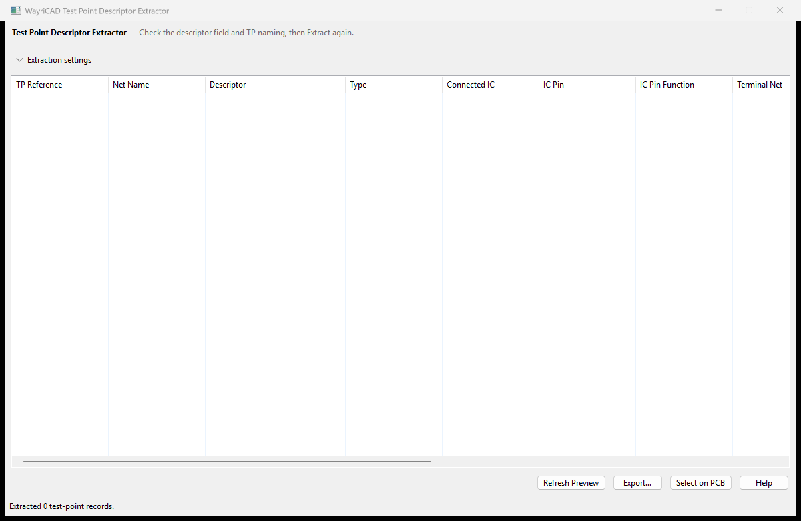

Produces manufacturing, integration, and software-facing TP documentation from TP/TestPoint footprints.

TP_Descriptor.DEMO_CTRL,DEMO_SENSOR,DEMO_POWER,DEMO_IO.Each row reports connected IC reference, pin, pin function, IC value, terminal net, intermediate components, and ordered path. Tracing crosses common resistors, capacitors, inductors, ferrites, fuses, jumpers, and parts marked NetTie_Path.
DEMO_CTRL_DEMO_SENSOR_SIGNAL_SPI1_CLK_1_TD source: DEMO_CTRL destination: DEMO_SENSOR signal: SPI1_CLK_1 type: Telemetry Digital
| Token | Meaning |
|---|---|
| TM / TC | Telemetry / Telecommand |
| TA / TD | Telemetry Analog / Digital |
| CA / CD | Command Analog / Digital |
Review and consolidate the TP table, choose a probe family, then use Export Fixture Plan for a channel map or Generate Fixture PCB for a separate KiCad board. The source PCB is never modified. Assign real connector/probe footprints, inspect mechanical alignment, clean up routing, and run DRC before fabrication.
PCB connectivity does not prove source direction, switch state, population option, or analog behavior. Blank pin functions require schematic review. Broad passive traversal can include shunt parts, so intermediate paths must be approved before ICD release.